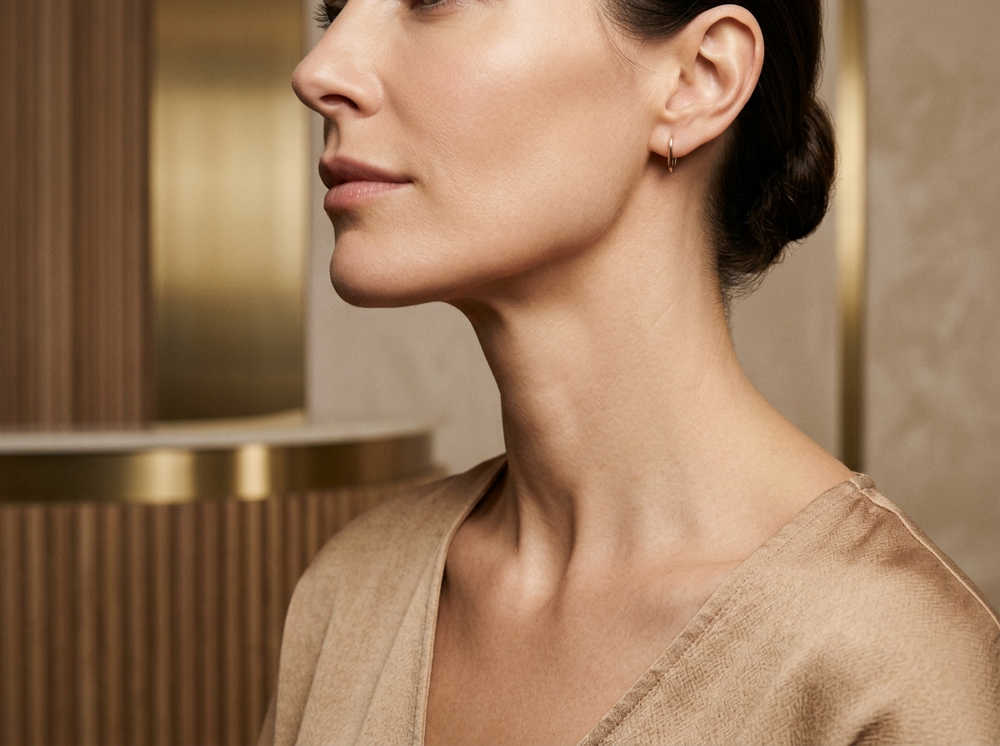
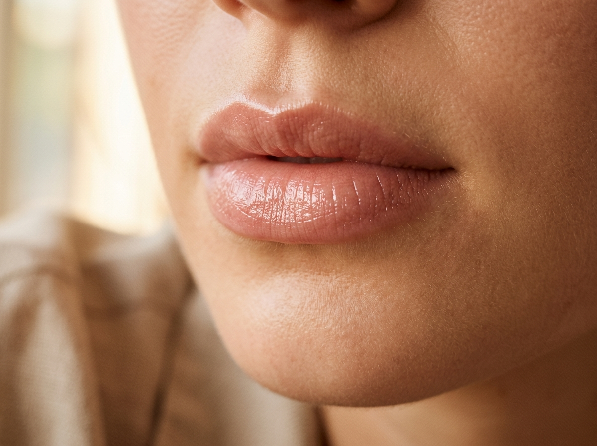

Harmonização Facial & Estética Orofacial
Tratamentos personalizados para redefinir contornos, rejuvenescer a derme e harmonizar o seu sorriso com proporções equilibradas.

Destaque ClínicoLipoaspiração de Papada HD
Remoção definitiva do acúmulo de gordura submentoniana com cânulas e anestesia local. Proporcionando um contorno mandibular esculpido, perfil alongado e afinamento do pescoço.
 Rejuvenescimento
Rejuvenescimento
Toxina Botulínica (Botox)
Prevenção e suavização de rugas dinâmicas na testa, glabela e "pés de galinha". Arqueamento elegante das sobrancelhas, tratamento para bruxismo e correção de sorriso gengival com naturalidade.

Escultura FacialPreenchimento com Ácido Hialurônico
Escultura labial para volume e hidratação 'glossy', harmonização do mento (queixo), definição de ângulo mandibular, maçãs do rosto (malar) e atenuação de olheiras profundas.
Bioestimuladores de Colágeno
Protocolos com Sculptra, Radiesse e Elleva para recuperar a espessura dérmica, combater a flacidez facial e cervical (pescoço) e criar um banco biológico de colágeno progressivo.
 Efeito Lifting
Efeito Lifting
Fios de Sustentação & Estímulo
Tracionamento de tecidos com reposicionamento do terço inferior ("buldogue") e fios lisos para estímulo concentrado de colágeno em pálpebras, código de barras e pescoço.
Lentes de Porcelana & Clareamento
Design do sorriso personalizado com laminados cerâmicos ultrafinos (lentes de contato dental) e clareamento. O equilíbrio perfeito entre dentes e face.